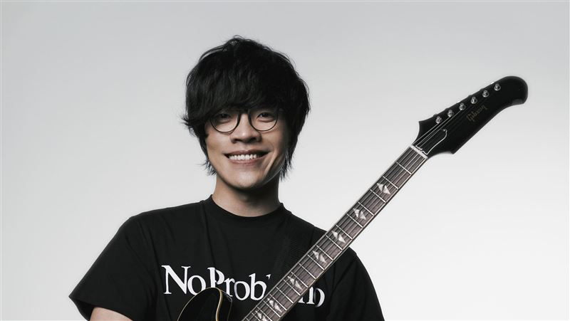

Crowd Lu is a Taiwanese singer songwriter, actor and musician known for his sunny personality and sincere music style. Born in 1985 in Tainan, he began writing songs while studying at Tamkang University. His first album, 100 Ways of Living in 2008, quickly made him popular and won several music awards. Crowd Lu's songs often describe small moments of happiness and warmth in everyday life, using simple melodies that bring comfort and strength. He also acts in films and dramas, spreading positivity and sincerity through his performances. Today, he is seen as one of Taiwan's most beloved and inspiring musicians.
